第 1 轮：五处界面的静态稿。都用真实的 nb-ui 组件与主题（亮色），对话里的消息用真实的对话视图；新加的部分是草稿，数据是写死的样本。版式按已定的注意力排序（第 22–26 条，见页底）搭的，这一轮看“照这样做行不行”，另有两处要选。
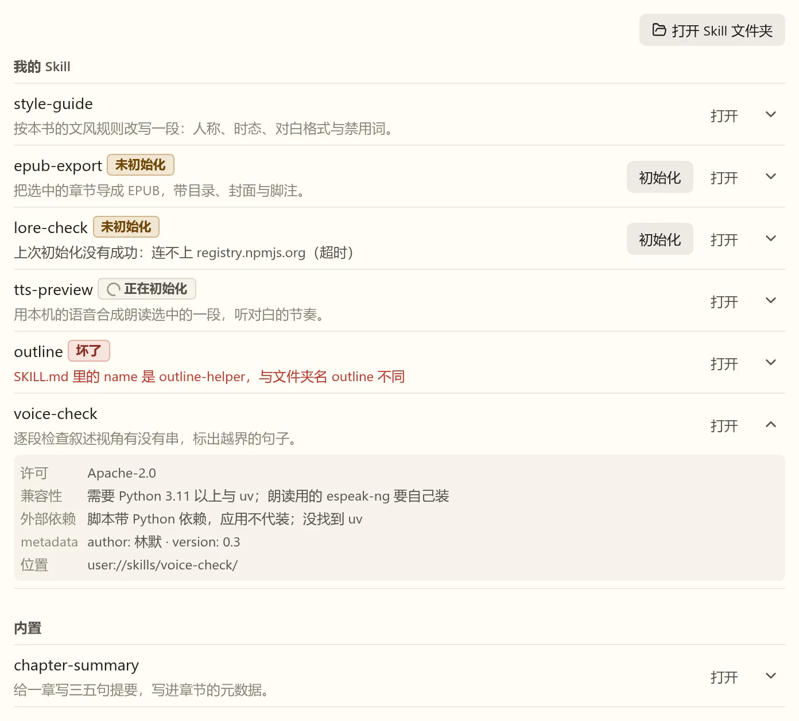
样子照插件页：分组小标题、分割线隔开的行、操作在右边。
$ 菜单：未初始化怎样标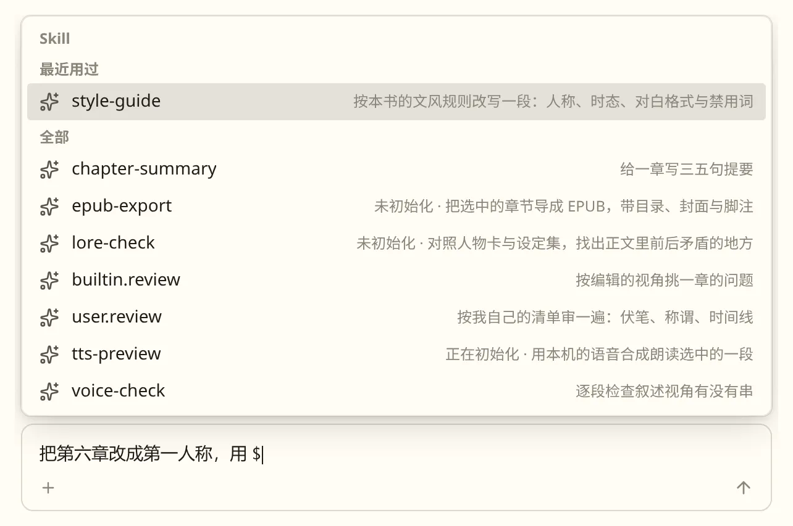
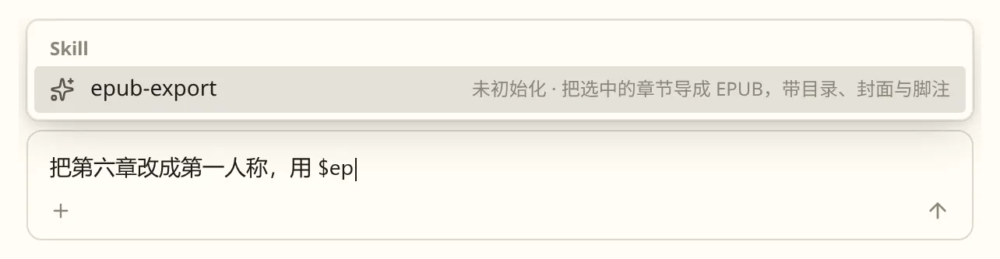
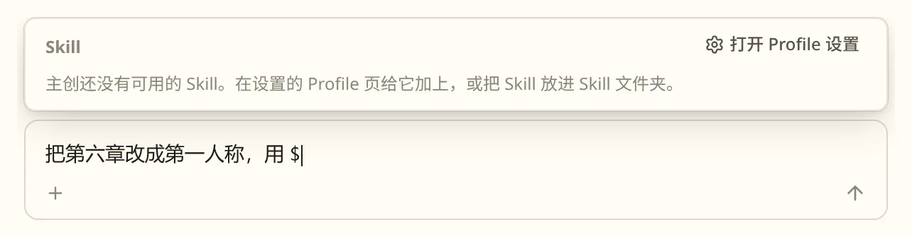
菜单是现有的建议菜单（与 @、/ 同一个），一项只有图标、名字和右边一行次要文字。最近用过的在前，其余按名字；坏了的不列；重名的写完整 id。空的时候说明在列表里，去设置的入口放在标题行右边。
A 写在说明开头（图里就是这样）：“未初始化 · ……”，与说明同色。不改组件；不够醒目，但选了以后会弹确认框，不会悄悄出错。
B 黄色徽标：右边画一个和 Skill 页一样的“未初始化”徽标，说明照旧。要给 nb-ui 的建议菜单加一个字段（项尾的徽标），其它用到这个菜单的地方不受影响。
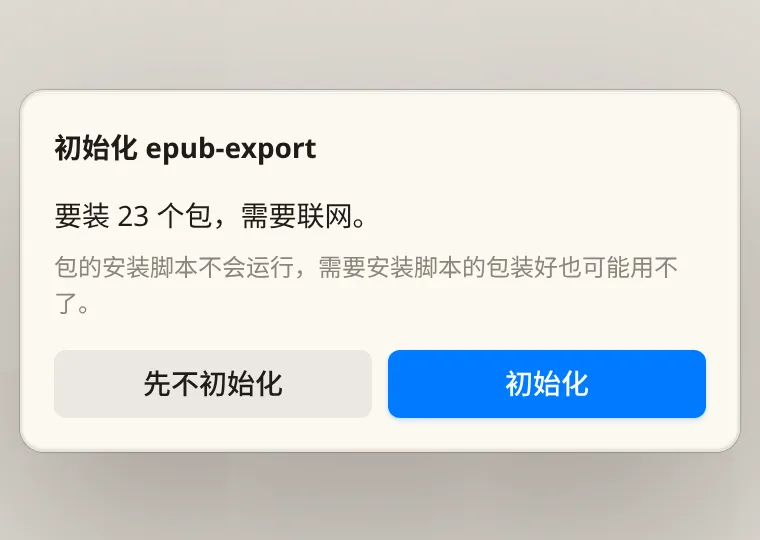
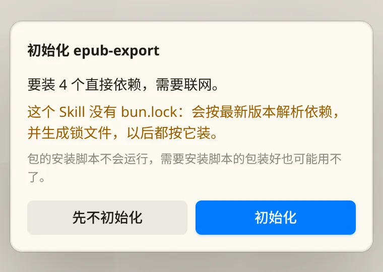
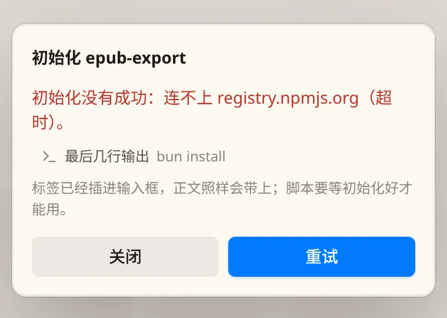
计划只定了“完成或失败都插标签”；“先不初始化”我按也插进去设计：正文照样带上，只是脚本跑不了。安装脚本一律不跑（计划里定的），所以确认框里说一句。
装依赖要联网，网慢时可能要几分钟。确认框是模态的，关不掉就什么也做不了。
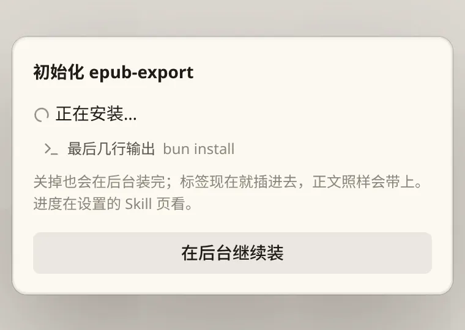
关掉后标签马上插进输入框，安装在服务端继续，进度与结果在 Skill 页看（“正在初始化”）。服务端本来就不依赖这个框，改动只在前端。
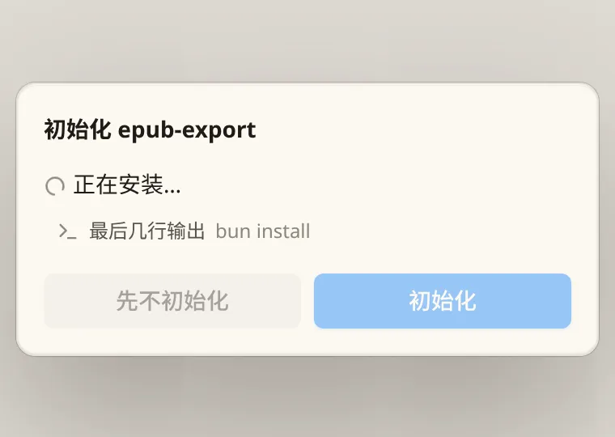
按钮都禁用，等装完或失败。少一条路径，但网慢时只能干等。
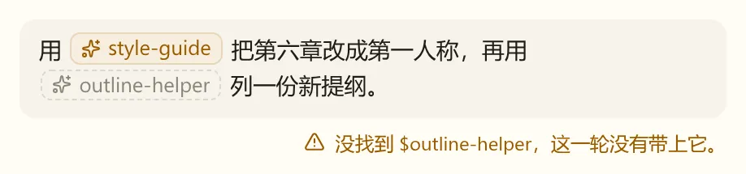
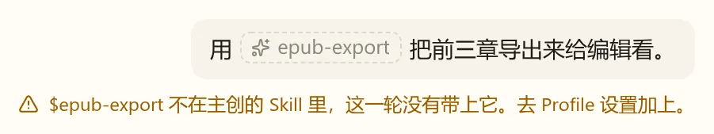
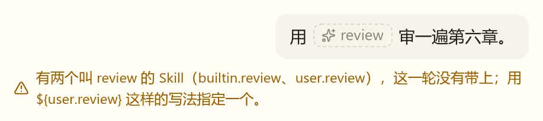
带上了的不另显示，标签本身就是证据；没带上的标签灰掉、改成虚线框，消息下面一行写原因。“坏了”“读不出来”两种原因同样写在这一行。
顺带：标签悬停时现在写“技能：…”，Skill 页、Profile 页都叫“Skill”。实现时统一写“Skill：…”，有异议在备注里说。
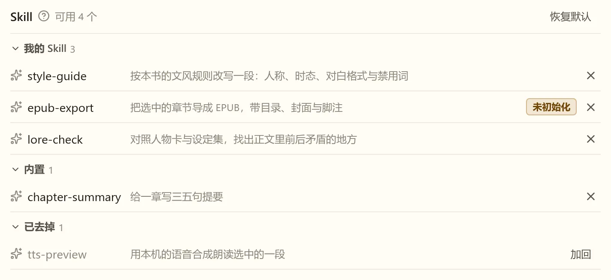
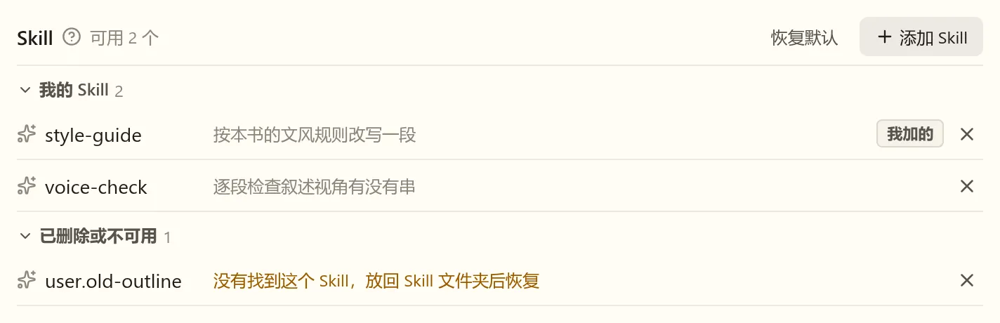
样子与工具、可派的子代理两节相同，放在它们下面。声明“全部”的列出 Skill 文件夹里的全部 Skill，每个能去掉；去掉的收在最后一组，能加回。只声明了几个的，右上角能添加；Skill 被删了的收在“已删除或不可用”。未初始化的也标出来，免得加了才发现要装。
$ 菜单：名字在前、说明一行，未初始化的在右边标出；最近用过的在前，其余按名字；坏的不列；白名单为空时写一句说明并带去设置的入口。